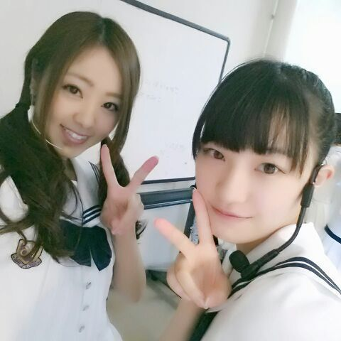

キリッ ! こんばんわ
ろってぃ子でちゅ.
実は ろってぃ-の好きな時間は
朝の ６時半なのです.
実は ってゆ-のも ちょっと違うか...
まぁ とりあえず今日も ６時半に起きたとゆう 話です あは
それで 朝から皆で茨城県の牛久市へ移動
ガタンゴトン )))
あ、車だから
ガタンゴトンぢゃなかった ウギッ
７枚目のアンダーメンバーでライブをするのは 今日が１回目 ☆
正直さあ ．．．．． 笑
めっちゃ 楽しかったです !!!
＼(^▽^)／＼(^o^)／＼(^▽^)／
天候が優れない中 足を運んでくださり
本当にありがとう♪(ｏ・ω・)ノ))
うれしゅうキモチやん ぃゃん.
1 ,ガールズルール(キャプポジ)
2 ,走れ！Bicycle(えりか'')
3 ,会いかったかもしれない(ななみん？'')
4 ,制服のマネキン(センター'')
5 ,ぐるぐるカーテン(さゆりん'')
6 ,おいでシャンプー(まいやん？'')
シングル曲満載だったお〜
リハーサルから全力で挑んで
皆で汗いっぱい )))
ライブ終わった瞬間 結んでた髪を
一瞬にしてほどいたよ (>∨<)
ライブ前
*-花奈-*と.

かなが隣で踊ってくれてると
なんだか すごく安心だったんだ。
よしっ、これからある収録をしてきます !
頑張るね♪(ｏ・ω・)ノ
ライブ後 せいたんとっ ちゅ.
のし rotty